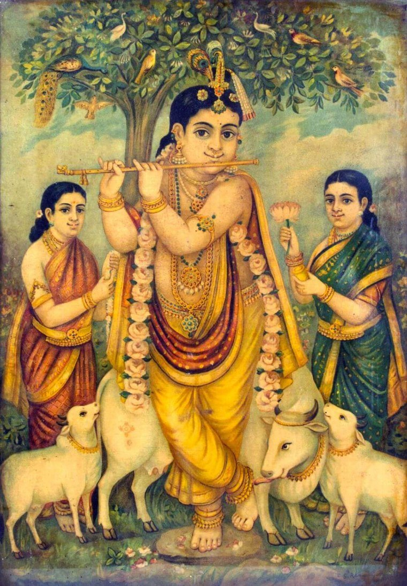

16നവംബർ 2026
മണ്ഡലകാലം ആരംഭിക്കുന്നു വിശേഷം
വൃശ്ചികം 1 മുതൽ 41 ദിവസം ദിവസവും ചുറ്റുവിളക്ക്, ഭജന, വിശേഷാൽ പൂജകൾ എന്നിവ ഉണ്ടായിരിക്കും. ചുറ്റുവിളക്ക് വഴിപാട് ക്ഷേത്രം ഓഫീസിൽ മുൻകൂട്ടി ബുക്ക് ചെയ്യാം.
ഉണ്ണിക്കണ്ണന്റെ അനുഗ്രഹം തേടിയെത്തുന്ന എല്ലാ ഭക്തജനങ്ങൾക്കും മുക്കാൽവെട്ടി ശ്രീകൃഷ്ണ ക്ഷേത്രത്തിലേക്ക് ഹൃദ്യമായ സ്വാഗതം. ദർശന സമയം, പൂജകൾ, വഴിപാടുകൾ, ഉത്സവങ്ങൾ, പുതിയ അറിയിപ്പുകൾ എന്നിവ ഇവിടെ ഒറ്റനോട്ടത്തിൽ അറിയാം.

| രാവിലെ | |
| നട തുറക്കൽ, നിർമ്മാല്യ ദർശനം | 5:00 |
| ഉഷഃപൂജ | 6:30 |
| ഉച്ചപൂജ | 10:30 |
| നട അടയ്ക്കൽ | 11:00 |
| വൈകുന്നേരം | |
| നട തുറക്കൽ | 5:00 |
| ദീപാരാധന | സന്ധ്യയ്ക്ക് |
| അത്താഴപൂജ | 7:30 |
| നട അടയ്ക്കൽ | 8:00 |
വൃശ്ചികം 1 മുതൽ 41 ദിവസം ചുറ്റുവിളക്കും വിശേഷാൽ പൂജകളും ഉണ്ടായിരിക്കും.
എല്ലാ അറിയിപ്പുകളും →ചിങ്ങമാസത്തിലെ ശ്രീകൃഷ്ണ ജയന്തി: ഉറിയടി, ശോഭായാത്ര, അർദ്ധരാത്രി പൂജ.
ഉത്സവങ്ങൾ →ക്ഷേത്രവുമായി ബന്ധപ്പെട്ട പുതിയ അറിയിപ്പുകളും വിശേഷ ദിവസങ്ങളും.
വൃശ്ചികം 1 മുതൽ 41 ദിവസം ദിവസവും ചുറ്റുവിളക്ക്, ഭജന, വിശേഷാൽ പൂജകൾ എന്നിവ ഉണ്ടായിരിക്കും. ചുറ്റുവിളക്ക് വഴിപാട് ക്ഷേത്രം ഓഫീസിൽ മുൻകൂട്ടി ബുക്ക് ചെയ്യാം.
എല്ലാ വഴിപാടുകളും ക്ഷേത്രം ഓഫീസിൽ നേരിട്ടോ ഫോൺ വഴിയോ ബുക്ക് ചെയ്യാവുന്നതാണ്.
ക്ഷേത്രത്തിലെ ദർശന സമയം, ഉത്സവങ്ങൾ, അറിയിപ്പുകൾ എന്നിവ ഇനി ഈ വെബ്സൈറ്റിൽ ലഭ്യമാകും.
ഭഗവാന്റെ പ്രധാന വിശേഷ ദിവസങ്ങളും ആഘോഷങ്ങളും.
ശ്രീകൃഷ്ണ ഭഗവാന്റെ തിരുജന്മദിനം. ക്ഷേത്രത്തിലെ ഏറ്റവും വലിയ ആഘോഷം.
പുലർച്ചെ വിഷുക്കണി ദർശനവും വിഷുക്കൈനീട്ടവും.
നാട്ടിൽ പ്രസിദ്ധമായ ആഘോഷം: ദിവസം മുഴുവൻ നാമജപവും ഏകാദശി വ്രതവും.
ഏഴു ദിവസം നീണ്ടുനിൽക്കുന്ന പാരായണ യജ്ഞം; നാട്ടിൽ ഏറെ പ്രസിദ്ധം.
ദിവസവും ചുറ്റുവിളക്കും ഭജനയും.
കലശാഭിഷേകവും വിശേഷാൽ പൂജകളും.
ദിവസേനയുള്ള പൂജകളും ഭക്തർക്ക് നടത്താവുന്ന വഴിപാടുകളും.
| വഴിപാട് | വിവരണം | നിരക്ക് |
|---|---|---|
| പുഷ്പാഞ്ജലി | ഭഗവാന് പുഷ്പങ്ങൾ അർപ്പിച്ചുള്ള അർച്ചന | ₹ — |
| പാൽപ്പായസം | ഭഗവാന് ഏറ്റവും പ്രിയപ്പെട്ട നിവേദ്യം | ₹ — |
| നെയ്പ്പായസം | നെയ്യും ശർക്കരയും ചേർത്ത നിവേദ്യം | ₹ — |
| വെണ്ണ നിവേദ്യം | ഉണ്ണിക്കണ്ണന് പ്രിയപ്പെട്ട വെണ്ണ | ₹ — |
| അവിൽ നിവേദ്യം | കുചേലന്റെ ഭക്തിയുടെ സ്മരണയ്ക്ക് | ₹ — |
| തൃമധുരം | പഴം, തേൻ, ശർക്കര എന്നിവ ചേർത്ത നിവേദ്യം | ₹ — |
| സഹസ്രനാമാർച്ചന | വിഷ്ണു സഹസ്രനാമം ചൊല്ലിയുള്ള അർച്ചന | ₹ — |
| നെയ്വിളക്ക് | ഭഗവാന് മുന്നിൽ നെയ്വിളക്ക് തെളിയിക്കൽ | ₹ — |
| ചുറ്റുവിളക്ക് | ശ്രീകോവിലിന് ചുറ്റുമുള്ള വിളക്കുകൾ തെളിയിക്കൽ | ₹ — |
| തുളസിമാല | ഭഗവാന് തുളസിമാല ചാർത്തൽ | ₹ — |
| ചോറൂണ് | കുഞ്ഞുങ്ങളുടെ ആദ്യ അന്നപ്രാശനം | ₹ — |
വഴിപാടുകൾ ക്ഷേത്രം ഓഫീസിൽ നേരിട്ടോ ഫോൺ വഴിയോ ബുക്ക് ചെയ്യാം.
തൃശ്ശൂർ ജില്ലയിലെ മേലൂരിൽ, പൂലാനിക്കടുത്ത് നിലമ്പതിയിൽ, ചാലക്കുടിപ്പുഴയുടെ സമീപത്തായി ശാന്തസുന്ദരമായ ഒരു ഗ്രാമാന്തരീക്ഷത്തിലാണ് മുക്കാൽവെട്ടി ശ്രീകൃഷ്ണ ക്ഷേത്രം സ്ഥിതി ചെയ്യുന്നത്. ഇവിടെ നടക്കുന്ന സപ്താഹ യജ്ഞവും ഏകാദശിയും നാട്ടിൽ ഏറെ പ്രസിദ്ധമാണ്.
ക്ഷേത്രത്തിന്റെ ഐതിഹ്യവും ചരിത്രവും ഉടൻ ഇവിടെ ചേർക്കുന്നതാണ്.
വിവരങ്ങൾ ഉടൻ ചേർക്കും